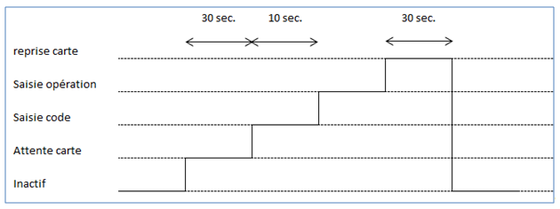

Diagramme de temps
Ils sont utilisés pour expliciter visuellement les divers comportements des objets d'un système au cours d'une période donnée.
Un diagramme de temps est une forme particulière de diagramme de séquence où les axes ont été inversés pour que le temps progresse de gauche à droite et les lignes de vie sont disposées dans des compartiments horizontaux.
Exemple
